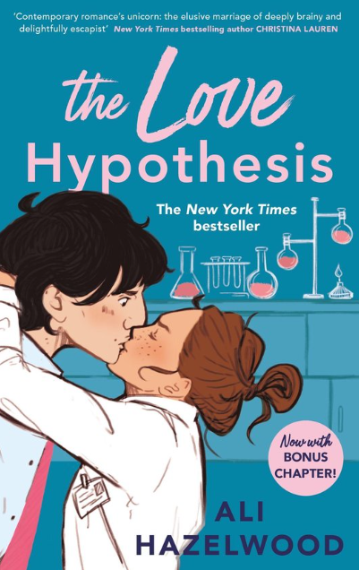

Fantasy novel by Sarah J. Maas, first published in 2015. The story
follows Feyre Archeron, a mortal huntress who is brought into the
faerie lands of Prythian after killing a wolf in the woods. She
becomes entangled in the politics and intrigues of the faerie courts,
particularly with Tamlin, a High Fae lord, and Rhysand, the enigmatic
High Lord of the Night Court. The novel explores themes of love,
power, and sacrifice as Feyre navigates her new life among the fae.
My Rating: ⭐⭐⭐⭐
The love hypothesis

Contemporary romance novel by Ali Hazelwood, published in 2021. The
story follows Olive Smith, a third-year Ph.D. candidate, who is
navigating the challenges of academia while pretending to be in a
relationship with a young professor, Adam Carlsen, to convince her
best friend that she is moving on from her ex. The novel explores
themes of love, ambition, and the complexities of relationships in an
academic setting.
My Rating: ⭐⭐⭐⭐⭐
The Deal
Contemporary romance novel by Elle Kennedy, published in 2015. The
story follows Hannah Wells, a college student who is struggling with
her studies and personal life. She makes a deal with Garrett Graham, a
hockey player, to tutor him in exchange for his help in getting closer
to her crush. The novel explores themes of love, friendship, and the
challenges of college life as Hannah and Garrett navigate their
growing feelings for each other while dealing with their own personal
issues.